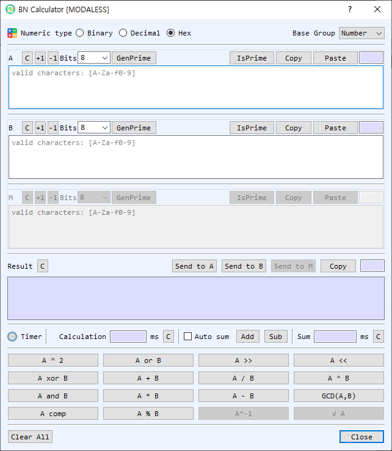

BN Calculator Dialog Guide
The BN Calculator performs arbitrary-precision integer and finite-field calculations. Choose a numeric representation and a base group, enter values in A, B, and, when needed, M, then select an operation.

Figure 1. BN Calculator with Hex input and the Number base group selected. Available operations depend on the selected base group.
Screen Areas
- Numeric type — Choose Binary, Decimal, or Hex. The same representation is used to read inputs and display results. Only digits valid for the selected base are accepted.
- Base Group — Choose Number, Modular, or GF2m. This determines which arithmetic operations are available and how the optional M value is used.
- A, B, and M fields — Enter operands. M is the modulus used by modular operations; it is disabled when the selected group does not need it. Each section shows the input length and provides its own controls.
- C, +1, and -1 — Clear a value or increment/decrement it by one.
- Bits, GenPrime, and IsPrime — Choose a bit length and generate a prime for A, B, or M. IsPrime tests the value in that section. Available bit sizes range from 8 to 4096.
- Copy / Paste — Copy a value to the clipboard or paste clipboard contents into the field.
- Result — Displays the calculation result in the selected numeric type. Send to A, Send to B, and Send to M copy the result into the corresponding operand. Copy copies the result; C clears it.
- Timer / Calculation / Sum — Shows the most recent operation and elapsed time in milliseconds. Auto sum adds each operation time to the running total; Add and Sub manually adjust the total. The adjacent C buttons clear the individual time or sum.
- Operation buttons — Run arithmetic, modular, bitwise, shift, or number-theory operations. The available buttons and labels vary with Base Group.
- Clear All / Close — Clear all operand and result values, or close the dialog.
Base Groups and Operations
| Base Group | Operations and behavior |
|---|---|
| Number | Standard integer addition, subtraction, multiplication, division, exponentiation, square, remainder, GCD, bitwise OR/AND/XOR/complement, shifts, and prime checks. The modular operand is not used. |
| Modular | Arithmetic modulo M, including modular addition, subtraction, multiplication, division, exponentiation, square, shift, inverse, and square root. Operations that require an inverse or square root may fail if the mathematical conditions are not met. |
| GF2m | Arithmetic in a binary extension field using the selected field modulus M. Available operations include field addition, subtraction, multiplication, division, exponentiation, square, remainder, inverse, square root, and shifts as enabled in the dialog. |
Perform a Calculation
- Select a Numeric type and Base Group.
- Enter the required operand values. Use A and B for binary operations; provide M when the selected operation is modular or uses a GF2m modulus.
- Select the operation button. The result appears in Result, and the operation time is shown in Timer.
- To continue calculating, use Send to A, Send to B, or Send to M to reuse the result as an operand.
Generate or Check a Prime
- In the desired operand section, choose a bit size from Bits.
- Select GenPrime to generate a prime and place it in that field.
- To test a value already entered, select IsPrime. The result is reported in BerEditor's message/log area.
Timing Operations
- Timer displays the latest operation and its elapsed time.
- Enable Auto sum to add each measured operation time to Sum automatically.
- Use Add or Sub to adjust the sum by the latest operation time. Clear the latest timer or accumulated sum with its adjacent C button.
Notes
- Hexadecimal values with an odd number of digits are padded with a leading zero internally for input conversion.
- Division by zero, invalid modular inverses, and other undefined operations produce a calculation error.
- In Modular and GF2m groups, select a valid modulus M appropriate to the operation. A generated prime can help create a modulus for prime-field calculations.
- The GF2m group performs arithmetic over a binary extension field; its operations do not use ordinary integer arithmetic semantics.